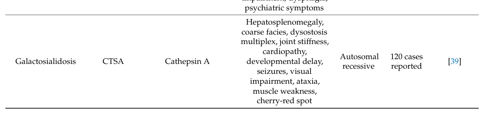

Glycoprotein Storage Disease (Glycoproteinoses/Oligosaccharidoses): Disease Characteristics Research Report
Target disease name used in request: “Glycoprotein Storage Disease” (Mendelian).
Executive summary (current understanding)
In current clinical-biochemical usage, “glycoprotein storage diseases” most closely corresponds to the lysosomal glycoproteinoses/oligosaccharidoses: inherited disorders caused by deficiency of lysosomal hydrolases (or related trafficking factors) needed for glycoprotein/oligosaccharide catabolism, leading to lysosomal accumulation and characteristic urinary oligosacchariduria/glyco‑conjugate biomarkers. This group includes (among others) aspartylglucosaminuria (AGA), fucosidosis (FUCA1), α‑mannosidosis (MAN2B1), sialidosis (NEU1), galactosialidosis (CTSA) and mucolipidosis II/III (GNPTAB/GNPTG), as enumerated in a recent pathway-oriented lysosomal disorder mapping table (makridou2025mappinglysosomalstorage pages 13-14, makridou2025mappinglysosomalstorage media 116d92e3, makridou2025mappinglysosomalstorage media 684000a4).
A modern classification example: mucolipidoses types I–III are classified as glycoproteinoses, while mucolipidosis IV is classified separately as a gangliosidosis (gorbunova2024lysosomalstoragediseases. pages 1-3). A broader mechanistic framework classifies these conditions as “enzymatic hydrolytic defects” within lysosomal storage disorders (LSDs) (makridou2025mappinglysosomalstorage pages 2-4).
Evidence type key
- Human clinical: case series, cohorts, and case reports.
- Clinical trials/real-world access: ClinicalTrials.gov records.
- Reviews/expert synthesis: narrative/systematic reviews.
- Model systems: iPSC/cellular or animal-model papers.
1. Disease information
1.1 What is the disease?
Because “glycoprotein storage disease” is not consistently used as a single OMIM entity, the most defensible approach for a knowledge base entry is to treat it as a disease family (glycoproteinoses/oligosaccharidoses) within LSDs.
- Definitional framing (expert synthesis): glycoproteinoses are treated as lysosomal disorders caused by deficiency of specific lysosomal hydrolases (or cofactors), preventing macromolecule degradation and producing lysosomal accumulation of partially degraded substrates (makridou2025mappinglysosomalstorage pages 2-4).
- Clinical classification statement (mucolipidosis within glycoproteinoses): mucolipidoses are presented as autosomal-recessive LSDs with storage of multiple macromolecules; “types I–III mucolipidoses are classified as glycoproteinoses” in “modern classification” (gorbunova2024lysosomalstoragediseases. pages 1-3).
1.2 Key identifiers (availability in retrieved evidence)
The retrieved evidence strongly supports subtype-level identifiers, but does not provide MONDO IDs.
Subtype-level identifiers explicitly present: - Aspartylglucosaminuria (AGU): OMIM #208400 (kouhashi2024a37yearoldman pages 1-2) - Fucosidosis: OMIM #230000 is mentioned in a related recent case report abstract (not central here) (pekdemir2025fucosidosisareview pages 15-16) - Galactosialidosis: OMIM #256540 (makridou2025mappinglysosomalstorage pages 10-12) - Mucolipidosis II (ML II): MIM #252500 (monteagudovilavedra2025novelphenotypicaland pages 1-2)
Note: ICD/MeSH/Orphanet/MONDO identifiers were not extractable from the retrieved texts in this run; therefore, they cannot be asserted with tool-backed evidence.
1.3 Synonyms and alternative names
- Family-level: glycoproteinoses / oligosaccharidoses (used in diagnostic context as a group causing “oligosacchariduria”) (kouhashi2024a37yearoldman pages 4-5, serrano2024hepatomegalyandsplenomegaly pages 5-7)
- Fucosidosis historical synonym: “mucopolysaccharidosis F” (pekdemir2025fucosidosisareview pages 2-4)
- Sialidosis type I synonym: “cherry-red spot myoclonus syndrome” (ding2024twocasesof pages 1-2)
- Mucolipidosis II synonym: “I-cell disease” (moutinho2025establishmentofa pages 1-2)
1.4 Evidence sources: patient-level vs aggregated
The current evidence is primarily aggregated disease-level resources (reviews, cohort studies) with some patient-level case reports (e.g., AGU adult diagnostic odyssey) (kouhashi2024a37yearoldman pages 1-2).
2. Etiology
2.1 Disease causal factors
Primary cause: germline pathogenic variants causing loss of function or impaired trafficking of lysosomal proteins involved in glycoprotein/oligosaccharide catabolism (makridou2025mappinglysosomalstorage pages 2-4).
Representative causal gene–enzyme relationships (visual table evidence): - AGA → aspartylglucosaminidase → AGU - FUCA1 → α‑L‑fucosidase → fucosidosis - MAN2B1 → lysosomal α‑mannosidase → α‑mannosidosis - NEU1 → neuraminidase‑1 → sialidosis - CTSA → protective protein/cathepsin A → galactosialidosis (makridou2025mappinglysosomalstorage media 116d92e3, makridou2025mappinglysosomalstorage media 684000a4)
2.2 Risk factors
For Mendelian LSDs, the main “risk factors” are genetic: - Autosomal recessive inheritance for the above disorders is repeatedly stated (e.g., fucosidosis and α‑mannosidosis) (bhattacherjee2023genotypefirstapproach pages 1-3, ficicioglu2024alphamannosidosis pages 1-3). - Consanguinity/founder effects can strongly increase local prevalence (e.g., fucosidosis in Cuba/Holguín with founder mutation Q427X) (chang2024epidemiologicalandpopulation pages 1-3).
2.3 Protective factors / gene–environment interactions
No evidence in retrieved texts supports environmental protective factors or gene–environment interactions for this disease family.
3. Phenotypes (human)
Because this is a disease family, phenotypes are best represented by common cross-cutting manifestations plus subtype-specific high-yield features.
3.1 Cross-cutting phenotypic domains
- Neurodevelopmental/neurodegenerative: developmental delay, progressive deterioration, seizures, ataxia, spasticity (multiple disorders) (ding2024twocasesof pages 1-2, pekdemir2025fucosidosisareview pages 7-9, kouhashi2024a37yearoldman pages 1-2).
- Skeletal/dysostosis multiplex and coarse facies: prominent in mucolipidosis II/III and fucosidosis; also reported in α‑mannosidosis (feng2024clinicalandmolecular pages 1-2, pekdemir2025fucosidosisareview pages 7-9, marins2024αmannosidosisdiagnosisin pages 1-2).
- Organomegaly and hepatosplenomegaly: part of the differential approach to LSD-related hepatosplenomegaly, including glycoproteinoses (serrano2024hepatomegalyandsplenomegaly pages 3-5, serrano2024hepatomegalyandsplenomegaly pages 2-3).
3.2 Subtype phenotype statistics (recent data)
Sialidosis type I (NEU1): pooled 71 cases up to 2023
A 2024 Orphanet Journal of Rare Diseases review pooled 71 genetically confirmed type I cases (69 literature + 2 new) (ding2024twocasesof pages 4-6). - Mean onset age 15.7 years (range 5–33); mean diagnosis age 24.1 years (range 8–51) (ding2024twocasesof pages 4-6). - Most frequent features: muscle spasms 91.5%, ataxia 75%, seizures 63.6% (ding2024twocasesof pages 4-6, ding2024twocasesof pages 1-2). - Additional reported frequencies: visual symptoms 66.2%, intellectual impairment 22.9% (11/48), abnormal EEG 50.0% (30/60), brain MRI abnormalities 41.4% (24/58) (ding2024twocasesof pages 8-9).
Suggested HPO terms (non-exhaustive): - Myoclonus / muscle spasms (e.g., HP:0001336), ataxia (HP:0001251), seizures (HP:0001250), cherry-red spot of the macula (HP:0012047), visual impairment (HP:0000505).
Mucolipidosis II/III (GNPTAB/GNPTG): phenotype and survival
- Chinese cohort (20 probands): common manifestations included joint stiffness, skeletal deformity, intellectual disability, short stature, and elevated plasma lysosomal enzymes with normal urinary GAGs (feng2024clinicalandmolecular pages 1-2).
- Pediatric cohort (n=19) reported median survival in ML II α/β of 28 months, “mainly due to respiratory failure” (erdem2025mucolipidosistypeii pages 1-2).
Suggested HPO terms: joint contractures (HP:0001374), gingival hypertrophy (HP:0000212), dysostosis multiplex (HP:0000943), cardiomyopathy/valve disease (HP:0001638).
Alpha-mannosidosis (MAN2B1)
Phenotypic core includes hearing loss, recurrent infections/immunodeficiency, skeletal abnormalities, developmental delay/intellectual disability, ataxia, hypotonia, psychiatric features, and variable disease severity (ficicioglu2024alphamannosidosis pages 1-3, hashmi2024exomesequenceanalysis pages 1-2).
Suggested HPO terms: hearing impairment (HP:0000365), immunodeficiency (HP:0002721), intellectual disability (HP:0001249), ataxia (HP:0001251).
Fucosidosis (FUCA1)
Clinical spectrum includes type I (early, severe) and type II (later, milder) with neurodegeneration, coarse facies, angiokeratomas, organomegaly and dysostosis multiplex (pekdemir2025fucosidosisareview pages 7-9, pekdemir2025fucosidosisareview pages 15-16).
Suggested HPO terms: coarse facies (HP:0000280), angiokeratoma (HP:0001025), hepatosplenomegaly (HP:0001433), seizures (HP:0001250).
Aspartylglucosaminuria (AGA)
An adult diagnostic-odyssey case emphasized developmental delay and later regression with epilepsy and coarse facies; it states: “Such a developmental delay is often observed as the first neurologic sign of aspartylglucosaminuria (AGU)” and notes characteristic diarrhea (kouhashi2024a37yearoldman pages 1-2).
4. Genetic / molecular information
4.1 Causal genes (core set supported by visual evidence)
The hydrolytic-defect table explicitly lists glycoprotein storage diseases and corresponding genes (makridou2025mappinglysosomalstorage media 116d92e3, makridou2025mappinglysosomalstorage media 684000a4): - AGA (AGU), FUCA1 (fucosidosis), MAN2B1 (α‑mannosidosis), NEU1 (sialidosis), CTSA (galactosialidosis).
Mucolipidosis II/III (trafficking defect; still classed among glycoproteinoses in modern classification): - GNPTAB (ML II; ML III α/β) and GNPTG (ML III γ) (gorbunova2024lysosomalstoragediseases. pages 1-3, feng2024clinicalandmolecular pages 1-2).
4.2 Pathogenic variants and variant classes (examples)
- AGU (AGA): homozygous donor splice-site variant c.698+1G>T identified by trio-WES (kouhashi2024a37yearoldman pages 1-2).
- α‑mannosidosis (MAN2B1): nonsense p.Ser899Ter in Brazilian families (marins2024αmannosidosisdiagnosisin pages 1-2); frameshift c.2402dupG (p.S802fs*129) reported in Saudi families (hashmi2024exomesequenceanalysis pages 1-2).
- ML II/III (GNPTAB): in one cohort, mutations found in 35/40 alleles (87.5%), with frequent variants c.2715+1G>A (14.3%) and c.2404C>T (p.Gln802Ter) (11.4%) and multiple novel variants (feng2024clinicalandmolecular pages 1-2).
- Fucosidosis (FUCA1): ClinVar catalog referenced as 160 variants with 23 pathogenic and 125 VUS (bhattacherjee2023genotypefirstapproach pages 1-3); HGMD catalog referenced as 36 biallelic pathogenic variants with multiple variant classes (pekdemir2025fucosidosisareview pages 9-10).
4.3 Functional consequences (mechanistic anchors)
- Sialidosis: NEU1 is a lysosomal enzyme hydrolyzing terminal sialic acid residues; loss causes accumulation of sialylated compounds (peng2025geneticinsightsand pages 1-2).
- ML II: failure to generate mannose‑6‑phosphate targeting leads to mis‑trafficking and secretion of lysosomal hydrolases, causing lysosomal substrate accumulation (moutinho2025establishmentofa pages 1-2).
4.4 Modifier genes / epigenetics / chromosomal abnormalities
No tool-retrieved evidence supported modifier genes or epigenetic mechanisms for this disease family.
5. Environmental information
No non-genetic environmental causal factors were supported by retrieved evidence; these are primarily Mendelian disorders.
6. Mechanism / pathophysiology
6.1 Causal chain (general)
1) Biallelic pathogenic variants in a lysosomal enzyme gene (e.g., NEU1, AGA, FUCA1, MAN2B1) or trafficking gene (GNPTAB/GNPTG) → 2) Reduced/absent enzyme activity or mis-targeting → 3) Accumulation of undegraded glycoprotein/oligosaccharide substrates in lysosomes and often in urine (oligosacchariduria) → 4) Secondary lysosomal dysfunction, multi-system tissue injury, and (in many subtypes) progressive CNS involvement (makridou2025mappinglysosomalstorage pages 2-4, kouhashi2024a37yearoldman pages 4-5).
6.2 CNS disease and the blood–brain barrier (BBB) as a central therapeutic constraint (expert opinions)
A 2023 Molecular Therapy review explicitly states: “neither enzymes, stem cells, nor viral vectors efficiently cross the blood–brain barrier” (critchley2023targetingthecentral pages 1-2). This frames why systemic ERT often fails to address neurodegeneration in many glycoproteinoses.
Mechanistic/therapeutic implications: - HSCT/HSC gene therapy can provide CNS benefit via engraftment and enzyme cross-correction (critchley2023targetingthecentral pages 8-9, critchley2023targetingthecentral pages 11-12). - rAAV approaches can be delivered systemically or directly into CSF/brain; higher systemic dosing may increase CNS exposure but raises toxicity risk (critchley2023targetingthecentral pages 9-11).
Suggested GO/CL terms (cross-cutting): - GO BP: lysosomal catabolic process; glycoprotein catabolic process; lysosomal enzyme targeting. - GO CC: lysosome; lysosomal lumen. - CL: microglial cell; neuron; oligodendrocyte.
7. Anatomical structures affected
Across the glycoproteinoses, affected structures frequently include: - CNS / brain (developmental delay, regression, seizures, ataxia) (pekdemir2025fucosidosisareview pages 7-9, ding2024twocasesof pages 4-6). - Retina/macula (sialidosis/galactosialidosis: cherry‑red spot) (ding2024twocasesof pages 1-2, gorbunova2024lysosomalstoragediseases. pages 1-3). - Skeletal system (dysostosis multiplex, joint stiffness/contractures; particularly ML II/III) (feng2024clinicalandmolecular pages 1-2, erdem2025mucolipidosistypeii pages 2-3). - Liver/spleen (hepatosplenomegaly and lysosomal-disease differential) (serrano2024hepatomegalyandsplenomegaly pages 2-3).
Suggested UBERON terms (examples): brain; retina; liver; spleen; skeleton.
8. Temporal development
- Sialidosis type I: typically later-onset in adolescence/young adulthood; pooled mean onset 15.7 years and diagnosis 24.1 years (ding2024twocasesof pages 4-6).
- ML II α/β: typically presents in the first year; severe course with markedly reduced survival (median 28 months in one cohort) (erdem2025mucolipidosistypeii pages 1-2).
- AGU: early developmental delay (around 12–15 months) is described as a typical first neurologic sign, with later progressive course (kouhashi2024a37yearoldman pages 4-5).
9. Inheritance and population
9.1 LSD overall incidence statistic (context)
A 2024 hepatosplenomegaly-focused review states LSDs have an “approximate collective incidence of 1 in 5000 live births” (serrano2024hepatomegalyandsplenomegaly pages 1-2).
9.2 Fucosidosis population genetics and founder effects (recent 2024 data)
A Cuban case-series/population-genetics study (1985–2023) reported: - 19 diagnosed patients in 13 families. - Case fatality 0.84 and parental consanguinity 0.53. - Estimated heterozygous carrier genotype frequency 0.0113887, interpreted as ~11,660 carriers in Holguín province. - High local prevalence attributed to founder effect and isolation (chang2024epidemiologicalandpopulation pages 1-3).
9.3 Newborn screening (AGU example)
The AGU diagnostic-odyssey paper notes: “AGU is included in newborn screening in Finland” (kouhashi2024a37yearoldman pages 5-6).
10. Diagnostics
10.1 Recommended diagnostic strategy (expert guidance for LSDs)
In the context of hepatosplenomegaly, a 2024 review states molecular testing is preferred as confirmatory testing “(over biopsy)” and should be paired with enzymatic testing when feasible (serrano2024hepatomegalyandsplenomegaly pages 1-2). It also emphasizes that some assays still require fibroblasts, e.g., neuraminidase in sialidosis/galactosialidosis (serrano2024hepatomegalyandsplenomegaly pages 7-8).
10.2 Key tests for glycoproteinoses/oligosaccharidoses (examples)
- Urine oligosaccharide/glyco‑conjugate screening: AGU paper recommends urinary analysis by UHPLC/HRAM MS to “screen for oligosaccharidoses” (kouhashi2024a37yearoldman pages 4-5).
- Subtype-specific enzyme assays: e.g., α‑L‑fucosidase deficiency in fucosidosis (bhattacherjee2023genotypefirstapproach pages 1-3, pekdemir2025fucosidosisareview pages 9-10), α‑mannosidase deficiency in α‑mannosidosis (marins2024αmannosidosisdiagnosisin pages 1-2), neuraminidase deficiency in sialidosis (peng2025geneticinsightsand pages 1-2).
- Genetic testing: trio-WES for undiagnosed intellectual disability with regression/epilepsy is presented as powerful (kouhashi2024a37yearoldman pages 1-2).
10.3 Quantitative biomarker example (AGU)
The AGU case report documents urinary elevation: “increased excretion of undegraded aspartyl-glucosamine (208 mmol/mol creatinine)” (kouhashi2024a37yearoldman pages 2-4).
11. Outcome / prognosis
- ML II α/β: poor survival (median 28 months in one cohort) (erdem2025mucolipidosistypeii pages 1-2); a separate review notes median survival ~5 years (monteagudovilavedra2025novelphenotypicaland pages 2-4).
- Fucosidosis: type I has early severe course with death often in childhood; type II has slower progression and can reach adulthood (pekdemir2025fucosidosisareview pages 7-9, pekdemir2025fucosidosisareview pages 15-16).
- Sialidosis type I: later-onset; progressive movement disorder with substantial disability, and later stages often requiring wheelchair use per review narrative (ding2024twocasesof pages 8-9).
For α‑mannosidosis, HSCT series summary in an authoritative clinical resource: “overall survival rate was 88%” in a reported set of 17 transplanted individuals with median follow-up 5.5 years (ficicioglu2024alphamannosidosis pages 12-14).
12. Treatment
12.1 Approved / real-world implementations (alpha-mannosidosis)
- Velmanase alfa (Lamzede®/Lamazym) is described as standard therapy for non-CNS manifestations in α‑mannosidosis (ficicioglu2024alphamannosidosis pages 12-14).
- ClinicalTrials.gov Phase 3 record (rhLAMAN-05; NCT01681953) provides trial design and endpoints: weekly IV 1 mg/kg; co‑primary endpoints included serum oligosaccharide reduction and change in 3‑minute stair climb test (NCT01681953 chunk 1).
- Expanded access program is available (NCT04959240), with updates through 2023-09-25 and language indicating access “prior to local regulatory approval” (NCT04959240 chunk 1).
- A real-world pediatric (<3 years) pharmacodynamic study is recruiting (NCT06184503) using GlcNAc(Man)2 as a disease marker and incorporating registry/compassionate-use data sources (NCT06184503 chunk 1).
MAXO suggestions: enzyme replacement therapy; expanded access/compassionate use; hematopoietic stem cell transplantation.
12.2 HSCT (alpha-mannosidosis and broader LSD context)
HSCT is cited as potentially preserving neurocognitive function in α‑mannosidosis and is supported by survival data (ficicioglu2024alphamannosidosis pages 12-14). For CNS LSDs, HSCT/HSC gene therapy is discussed mechanistically as enabling microglia-like engraftment and enzyme cross-correction (critchley2023targetingthecentral pages 8-9, critchley2023targetingthecentral pages 11-12).
12.3 Experimental/early-stage gene therapy (AGU)
A planned intrathecal AAV gene therapy trial: - NCT07530796 (ClinicalTrials.gov; sponsor Rare Trait Hope) is an open-label Phase 1/2 trial of Danagalex (scAAV9/AGA) intrathecal single-dose gene therapy; NOT_YET_RECRUITING with estimated start 2026-05-01; primary endpoint safety through Day 720; secondary endpoints include change in glycoasparagine biomarker and AGA activity, and NIH Toolbox Motor Function outcomes (NCT07530796 chunk 1).
12.4 Supportive care (core across glycoproteinoses)
- Sialidosis type I: antiseizure medication is used but may not prevent recurrent seizures (ding2024twocasesof pages 4-6).
- Fucosidosis: supportive multidisciplinary care; disease-modifying approaches remain investigational (pekdemir2025fucosidosisareview pages 15-16).
13. Prevention
For Mendelian glycoproteinoses, prevention is largely genetic/public-health: - Newborn screening: AGU is included in Finland newborn screening (kouhashi2024a37yearoldman pages 5-6). - Genetic counseling: emphasized in diagnostic reviews and in subtype reports (e.g., sialidosis review emphasizes NEU1 guidance for counseling/prenatal diagnosis) (ding2024twocasesof pages 1-2).
14. Other species / natural disease
No tool-retrieved evidence in this run addressed naturally occurring veterinary glycoproteinoses.
15. Model organisms / model systems
Evidence for model systems is strongest for mucolipidosis II: - A 2025 paper reports a GNPTAB-mutant ML II iPSC line recapitulating key hallmarks (reduced intracellular M6P-dependent hydrolase activity with increased secretion; free cholesterol accumulation), explicitly positioned as a resource for mechanistic and therapeutic studies (moutinho2025establishmentofa pages 1-2).
Suggested model-relevant ontology: - CL: fibroblast; iPSC; neuron (for derived models).
Visual evidence: subtype-to-gene mapping
Makridou et al. provide a table segment listing key glycoproteinoses and causal genes (CTSA, NEU1, FUCA1, AGA, MAN2B1), supporting the disease-family mapping requested (makridou2025mappinglysosomalstorage media 116d92e3, makridou2025mappinglysosomalstorage media 684000a4).
Structured summary table (for knowledge base ingestion)
Table (click to expand)
| Disorder (key synonyms) | Causal gene(s) and enzyme/protein | Inheritance | Key stored substrate / biomarker | Core phenotypes (1 line) | Diagnostics (1 line) | Disease-modifying treatments (approved/experimental) | Suggested ontology terms |
|---|---|---|---|---|---|---|---|
| Aspartylglucosaminuria (AGU; aspartylglycosaminuria) | AGA; aspartylglucosaminidase / glycosylasparaginase | AR | Aspartylglucosamine and other glycoasparagines in urine; aberrant urinary oligosaccharides (kouhashi2024a37yearoldman pages 1-2, kouhashi2024a37yearoldman pages 2-4, kouhashi2024a37yearoldman pages 4-5) | Developmental delay from ~12–15 months, later regression, ID, epilepsy, coarse facies, recurrent diarrhea/infections, MRI abnormalities (kouhashi2024a37yearoldman pages 1-2, kouhashi2024a37yearoldman pages 2-4, kouhashi2024a37yearoldman pages 4-5) | Trio-WES or other molecular testing for AGA plus urine UHPLC/HRAM mass spectrometry oligosaccharide profiling (kouhashi2024a37yearoldman pages 1-2, kouhashi2024a37yearoldman pages 4-5) | No approved disease-modifying therapy identified here; intrathecal scAAV9/AGA gene therapy trial planned (NCT07530796); pharmacologic chaperone/betaine reported in later prepublication evidence (NCT07530796 chunk 1) | MONDO: n/a; HPO: HP:0001249, HP:0001250, HP:0001263; GO BP/CC: glycoprotein catabolic process, lysosome; CL: neuron, oligodendrocyte; UBERON: brain; MAXO: gene therapy, urine metabolite measurement |
| Fucosidosis (historically mucopolysaccharidosis F) | FUCA1; α-L-fucosidase | AR | Fucose-containing glycoproteins/glycolipids/oligosaccharides; absent or very low α-L-fucosidase activity; urinary fucose-rich glycoconjugates/glycopeptides (pekdemir2025fucosidosisareview pages 9-10, pekdemir2025fucosidosisareview pages 7-9, bhattacherjee2023genotypefirstapproach pages 1-3, pekdemir2025fucosidosisareview pages 1-2) | Infantile/childhood psychomotor regression, seizures, spasticity/hypotonia, coarse facies, angiokeratoma/telangiectasia, hepatosplenomegaly, dysostosis multiplex, recurrent infections (pekdemir2025fucosidosisareview pages 9-10, pekdemir2025fucosidosisareview pages 7-9, chang2024epidemiologicalandpopulation pages 1-3, pekdemir2025fucosidosisareview pages 15-16) | Enzyme assay in leukocytes/fibroblasts/plasma, urinary oligosaccharide/glycopeptide studies, confirmatory FUCA1 sequencing; MRI may show hypomyelination/basal ganglia signal change (pekdemir2025fucosidosisareview pages 9-10, chang2024epidemiologicalandpopulation pages 1-3, rosario2023extendedanalysisof pages 4-7) | No definitive approved therapy identified; supportive care standard; HSCT/HCT, gene therapy and ERT remain investigational or limited-case approaches (pekdemir2025fucosidosisareview pages 15-16, pekdemir2025fucosidosisareview pages 1-2) | MONDO: n/a; HPO: HP:0002376, HP:0001250, HP:0000953, HP:0001433; GO BP/CC: fucose-containing compound catabolic process, lysosome; CL: neuron, microglial cell; UBERON: brain, liver, spleen; MAXO: hematopoietic stem cell transplantation, seizure management |
| Alpha-mannosidosis (α-mannosidosis) | MAN2B1; lysosomal acid α-mannosidase | AR | Mannose-rich oligosaccharides in serum/urine; low leukocyte α-mannosidase activity (~5–15% or less of normal in reports) (marins2024αmannosidosisdiagnosisin pages 1-2, ficicioglu2024alphamannosidosis pages 1-3, ficicioglu2024alphamannosidosis pages 5-8) | Hearing loss, recurrent infections/immunodeficiency, skeletal/facial abnormalities, ataxia, hypotonia, developmental delay/ID, psychiatric features; variable severity (marins2024αmannosidosisdiagnosisin pages 1-2, ficicioglu2024alphamannosidosis pages 1-3, hashmi2024exomesequenceanalysis pages 1-2, ficicioglu2024alphamannosidosis pages 5-8) | Enzyme assay plus MAN2B1 molecular testing; urinary mannose-rich oligosaccharides as screen; functional monitoring includes 6MWT/3MSCT, hearing, imaging (marins2024αmannosidosisdiagnosisin pages 1-2, ficicioglu2024alphamannosidosis pages 1-3, ficicioglu2024alphamannosidosis pages 12-14, ficicioglu2024alphamannosidosis pages 5-8) | Velmanase alfa approved for non-CNS manifestations (EU 2018; US 2023 in cited evidence); HSCT used in selected severe cases; expanded access/real-world pediatric studies ongoing (stepien2025evolutionofmobility pages 1-2, ficicioglu2024alphamannosidosis pages 12-14, NCT04959240 chunk 1, NCT01681953 chunk 1, NCT06184503 chunk 1, NCT02998879 chunk 1) | MONDO: n/a; HPO: HP:0000365, HP:0002719, HP:0001251, HP:0001252; GO BP/CC: N-glycan catabolic process, lysosome; CL: neuron, immune cell; UBERON: ear, skeleton, brain; MAXO: enzyme replacement therapy, HSCT |
| Sialidosis type I (cherry-red spot myoclonus syndrome; neuraminidase deficiency type I) | NEU1; neuraminidase-1 / lysosomal sialidase | AR | Accumulation of sialylated compounds; reduced leukocyte/fibroblast NEU1 activity; urinary sialic acid may be increased but can be variable (li2024clinicalandstructural pages 1-2, peng2025geneticinsightsand pages 4-6, peng2025geneticinsightsand pages 1-2) | Usually adolescent/young-adult onset progressive myoclonus, ataxia, seizures, visual impairment, bilateral macular cherry-red spots; pooled frequencies: muscle spasms 91.5%, ataxia 75%, seizures 63.6% (ding2024twocasesof pages 1-2, ding2024twocasesof pages 4-6, ding2024twocasesof pages 8-9) | NEU1 sequencing with enzyme assay, ophthalmic exam/OCT, EEG, VEP/SEP, brain MRI; mean onset ~15.7 y and diagnosis ~24.1 y in pooled review (li2024clinicalandstructural pages 1-2, ding2024twocasesof pages 1-2, ding2024twocasesof pages 4-6) | No approved disease-modifying therapy identified here; supportive antiseizure care standard; AAV-mediated gene therapy is preclinical/experimental and natural-history study is recruiting (peng2025geneticinsightsand pages 1-2, critchley2023targetingthecentral pages 11-12) | MONDO: n/a; HPO: HP:0001336, HP:0001250, HP:0002066, HP:0012047; GO BP/CC: sialylated glycoprotein catabolic process, lysosomal lumen; CL: neuron, retinal cell; UBERON: cerebellum, retina; MAXO: antiseizure medication, genetic testing |
| Galactosialidosis (GS; protective protein/cathepsin A deficiency) | CTSA; protective protein/cathepsin A (PPCA), with secondary NEU1 and β-galactosidase deficiency | AR | Sialyloligosaccharides and glycopeptides; absent/undetectable PPCA activity; secondary neuraminidase deficiency (gorbunova2024lysosomalstoragediseases. pages 1-3, makridou2025mappinglysosomalstorage pages 7-9) | Variable infantile/late-infantile/juvenile-adult disease with developmental delay, coarse facies, cherry-red macula, visceromegaly, skeletal deformity, cardiac disease, hearing loss; T-cell defects reported in a family (gorbunova2024lysosomalstoragediseases. pages 1-3, makridou2025mappinglysosomalstorage pages 7-9) | Lysosomal enzyme assays showing PPCA deficiency with confirmatory CTSA sequencing; ophthalmic and multisystem assessment (makridou2025mappinglysosomalstorage pages 7-9, gorbunova2024lysosomalstoragediseases. pages 1-3) | No approved disease-modifying therapy identified in retrieved evidence; supportive multidisciplinary care standard; preclinical ERT/chaperone/gene therapy discussed in reviews (gorbunova2024lysosomalstoragediseases. pages 1-3) | MONDO: n/a; HPO: HP:0001249, HP:0001083, HP:0001433, HP:0002650; GO BP/CC: lysosomal multienzyme complex assembly, lysosome; CL: neuron, T cell; UBERON: eye, liver, spleen, heart; MAXO: supportive care, enzyme assay |
| Mucolipidosis II/III (ML II/I-cell disease; ML III alpha/beta; ML III gamma; pseudo-Hurler polydystrophy) | GNPTAB (ML II, ML III α/β); GNPTG (ML III γ); UDP-GlcNAc:lysosomal-enzyme N-acetylglucosamine-1-phosphotransferase subunits | AR | Defective mannose-6-phosphate tagging; elevated extracellular/plasma lysosomal enzymes (e.g., hexosaminidase, arylsulfatase A, α-L-fucosidase, α-D-mannosidase); urine GAGs often normal (feng2024clinicalandmolecular pages 1-2, erdem2025mucolipidosistypeii pages 2-3, monteagudovilavedra2025novelphenotypicaland pages 1-2, moutinho2025establishmentofa pages 1-2) | ML II: neonatal/infantile severe skeletal disease, coarse facies, gingival hypertrophy, contractures, cardiopulmonary disease, hepatosplenomegaly, developmental delay, poor survival; ML III: later-onset milder skeletal/joint disease with survival into adulthood/mid-adulthood (erdem2025mucolipidosistypeii pages 1-2, feng2024clinicalandmolecular pages 1-2, feng2024clinicalandmolecular pages 2-3, erdem2025mucolipidosistypeii pages 7-8, monteagudovilavedra2025novelphenotypicaland pages 2-4, moutinho2025establishmentofa pages 1-2) | Molecular testing (GNPTAB/GNPTG) plus characteristic enzyme pattern in plasma/DBS/fibroblasts; skeletal radiographs and multisystem evaluation; DBS may support minimally invasive screening (erdem2025mucolipidosistypeii pages 1-2, feng2024clinicalandmolecular pages 1-2, erdem2025mucolipidosistypeii pages 2-3, monteagudovilavedra2025novelphenotypicaland pages 1-2) | No approved disease-modifying therapy identified in current evidence; supportive care standard; experimental biomarker and model-system work ongoing (monteagudovilavedra2025novelphenotypicaland pages 1-2, monteagudovilavedra2025novelphenotypicaland pages 2-4, moutinho2025establishmentofa pages 1-2) | MONDO: n/a; HPO: HP:0002758, HP:0001387, HP:0000175, HP:0001638; GO BP/CC: lysosomal enzyme targeting, mannose-6-phosphate biosynthetic process, Golgi/lysosome; CL: chondrocyte, fibroblast; UBERON: skeleton, heart, lung; MAXO: supportive orthopedic/cardiac care, dried blood spot screening |
Table: This table summarizes the main glycoprotein storage diseases discussed in the evidence base, aligning subtype names, causal genes, biomarkers, phenotypes, diagnostics, treatments, and concise ontology suggestions. It is useful as a compact disease-knowledge-base scaffold for comparing the major glycoproteinoses/oligosaccharidoses.
Key limitations of this evidence package
- MONDO / Orphanet / ICD / MeSH identifiers for the umbrella term “glycoprotein storage disease” were not present in the retrieved sources; thus, they cannot be asserted with tool-backed citations.
- Many sources retrieved are 2025 (still recent and relevant), but the report prioritizes 2023–2024 where available (e.g., Ding 2024; Serrano 2024; Marins 2024; Kouhashi 2024; Critchley 2023).
References
-
(makridou2025mappinglysosomalstorage pages 13-14): Anna Makridou, Evangelie Sintou, Sofia Chatzianagnosti, Sofia Gargani, Maria Eleni Manthou, Iasonas Dermitzakis, and Paschalis Theotokis. Mapping lysosomal storage disorders with neurological features by cellular pathways: towards precision medicine. Current Issues in Molecular Biology, 47:1009, Dec 2025. URL: https://doi.org/10.3390/cimb47121009, doi:10.3390/cimb47121009. This article has 0 citations.
-
(makridou2025mappinglysosomalstorage media 116d92e3): Anna Makridou, Evangelie Sintou, Sofia Chatzianagnosti, Sofia Gargani, Maria Eleni Manthou, Iasonas Dermitzakis, and Paschalis Theotokis. Mapping lysosomal storage disorders with neurological features by cellular pathways: towards precision medicine. Current Issues in Molecular Biology, 47:1009, Dec 2025. URL: https://doi.org/10.3390/cimb47121009, doi:10.3390/cimb47121009. This article has 0 citations.
-
(makridou2025mappinglysosomalstorage media 684000a4): Anna Makridou, Evangelie Sintou, Sofia Chatzianagnosti, Sofia Gargani, Maria Eleni Manthou, Iasonas Dermitzakis, and Paschalis Theotokis. Mapping lysosomal storage disorders with neurological features by cellular pathways: towards precision medicine. Current Issues in Molecular Biology, 47:1009, Dec 2025. URL: https://doi.org/10.3390/cimb47121009, doi:10.3390/cimb47121009. This article has 0 citations.
-
(gorbunova2024lysosomalstoragediseases. pages 1-3): Viktoria N. Gorbunova, Nataliya V. Buchinskaia, and Anastasia O. Vechkasova. Lysosomal storage diseases. mucolipidosis. Pediatrician (St. Petersburg), 15:81-98, Nov 2024. URL: https://doi.org/10.17816/ped15581-98, doi:10.17816/ped15581-98. This article has 1 citations.
-
(makridou2025mappinglysosomalstorage pages 2-4): Anna Makridou, Evangelie Sintou, Sofia Chatzianagnosti, Sofia Gargani, Maria Eleni Manthou, Iasonas Dermitzakis, and Paschalis Theotokis. Mapping lysosomal storage disorders with neurological features by cellular pathways: towards precision medicine. Current Issues in Molecular Biology, 47:1009, Dec 2025. URL: https://doi.org/10.3390/cimb47121009, doi:10.3390/cimb47121009. This article has 0 citations.
-
(kouhashi2024a37yearoldman pages 1-2): Mutsuo Kouhashi, Kayoko Yukawa, Naoko Yano, Marne C. Hagemeijer, Shinya Hirata, Daisuke Kambe, Atsushi Yokoyama, Akira Yoshida, Kengo Kora, Corline J. de Ronde, Sandrien Vrieswijk, Eric van der Meijden, Takeshi Yoshida, and Hirofumi Yamashita. A 37-year-old man with intellectual disability discovered to have aspartylglucosaminuria. Jun 2024. URL: https://doi.org/10.1212/nxg.0000000000200161, doi:10.1212/nxg.0000000000200161. This article has 2 citations.
-
(pekdemir2025fucosidosisareview pages 15-16): Burcu Pekdemir, Mikhael Bechelany, and Sercan Karav. Fucosidosis: a review of a rare disease. International Journal of Molecular Sciences, 26:353, Jan 2025. URL: https://doi.org/10.3390/ijms26010353, doi:10.3390/ijms26010353. This article has 12 citations.
-
(makridou2025mappinglysosomalstorage pages 10-12): Anna Makridou, Evangelie Sintou, Sofia Chatzianagnosti, Sofia Gargani, Maria Eleni Manthou, Iasonas Dermitzakis, and Paschalis Theotokis. Mapping lysosomal storage disorders with neurological features by cellular pathways: towards precision medicine. Current Issues in Molecular Biology, 47:1009, Dec 2025. URL: https://doi.org/10.3390/cimb47121009, doi:10.3390/cimb47121009. This article has 0 citations.
-
(monteagudovilavedra2025novelphenotypicaland pages 1-2): Eines Monteagudo-Vilavedra, Daniel Rodrigues, Giorgia Vella, Susana B. Bravo, Carmen Pena, Laura Lopez-Valverde, Cristobal Colon, Paula Sanchez-Pintos, Francisco J. Otero Espinar, Maria L. Couce, and J. Victor Alvarez. Novel phenotypical and biochemical findings in mucolipidosis type ii. International Journal of Molecular Sciences, 26:2408, Mar 2025. URL: https://doi.org/10.3390/ijms26062408, doi:10.3390/ijms26062408. This article has 2 citations.
-
(kouhashi2024a37yearoldman pages 4-5): Mutsuo Kouhashi, Kayoko Yukawa, Naoko Yano, Marne C. Hagemeijer, Shinya Hirata, Daisuke Kambe, Atsushi Yokoyama, Akira Yoshida, Kengo Kora, Corline J. de Ronde, Sandrien Vrieswijk, Eric van der Meijden, Takeshi Yoshida, and Hirofumi Yamashita. A 37-year-old man with intellectual disability discovered to have aspartylglucosaminuria. Jun 2024. URL: https://doi.org/10.1212/nxg.0000000000200161, doi:10.1212/nxg.0000000000200161. This article has 2 citations.
-
(serrano2024hepatomegalyandsplenomegaly pages 5-7): Teodoro Jerves Serrano, Jessica Gold, James A. Cooper, Heather J. Church, Karen L. Tylee, Hoi Yee Wu, Sun Young Kim, and Karolina M. Stepien. Hepatomegaly and splenomegaly: an approach to the diagnosis of lysosomal storage diseases. Journal of Clinical Medicine, 13:1465, Mar 2024. URL: https://doi.org/10.3390/jcm13051465, doi:10.3390/jcm13051465. This article has 17 citations.
-
(pekdemir2025fucosidosisareview pages 2-4): Burcu Pekdemir, Mikhael Bechelany, and Sercan Karav. Fucosidosis: a review of a rare disease. International Journal of Molecular Sciences, 26:353, Jan 2025. URL: https://doi.org/10.3390/ijms26010353, doi:10.3390/ijms26010353. This article has 12 citations.
-
(ding2024twocasesof pages 1-2): Yuan Ding, Ming Cheng, and Chunxiu Gong. Two cases of type i sialidosis and a literature review. Orphanet Journal of Rare Diseases, Nov 2024. URL: https://doi.org/10.1186/s13023-024-03431-3, doi:10.1186/s13023-024-03431-3. This article has 8 citations and is from a peer-reviewed journal.
-
(moutinho2025establishmentofa pages 1-2): Maria Eduarda Moutinho, Mariana Gonçalves, Ana Joana Duarte, Marisa Encarnação, Maria Francisca Coutinho, Liliana Matos, Juliana Inês Santos, Diogo Ribeiro, Olga Amaral, Paulo Gaspar, Sandra Alves, and Luciana Vaz Moreira. Establishment of a human ipsc line from mucolipidosis type ii that expresses the key markers of the disease. International Journal of Molecular Sciences, 26:3871, Apr 2025. URL: https://doi.org/10.3390/ijms26083871, doi:10.3390/ijms26083871. This article has 1 citations.
-
(bhattacherjee2023genotypefirstapproach pages 1-3): Amrita Bhattacherjee, Elyska Desa, Kaisar Ahmad Lone, Arjita Jaiswal, Shweta Tyagi, and Ashwin Dalal. Genotype first approach & familial segregation analysis help in the elucidation of disease-causing variant for fucosidosis. The Indian Journal of Medical Research, 157:363-366, Apr 2023. URL: https://doi.org/10.4103/ijmr.ijmr_3568_20, doi:10.4103/ijmr.ijmr_3568_20. This article has 4 citations.
-
(ficicioglu2024alphamannosidosis pages 1-3): C Ficicioglu and KM Stepien. Alpha-mannosidosis. Definitions, Feb 2024. URL: https://doi.org/10.32388/p4ubcw, doi:10.32388/p4ubcw. This article has 84 citations.
-
(chang2024epidemiologicalandpopulation pages 1-3): Víctor Jesús Tamayo Chang, Estela Morales Peralta, Paulina Araceli Lantigua Cruz, Teresa Collazo Mesa, Elayne Esther Santana Hernández, and Roberto Lardoeyt Ferrer. Epidemiological and population genetic characterization of fucosidosis in holguin province, cuba. Salud, Ciencia y Tecnología - Serie de Conferencias, 3:978, Jul 2024. URL: https://doi.org/10.56294/sctconf2024978, doi:10.56294/sctconf2024978. This article has 1 citations.
-
(pekdemir2025fucosidosisareview pages 7-9): Burcu Pekdemir, Mikhael Bechelany, and Sercan Karav. Fucosidosis: a review of a rare disease. International Journal of Molecular Sciences, 26:353, Jan 2025. URL: https://doi.org/10.3390/ijms26010353, doi:10.3390/ijms26010353. This article has 12 citations.
-
(feng2024clinicalandmolecular pages 1-2): Yuyu Feng, Yonglan Huang, Xiaoyuan Zhao, Huiying Sheng, Xueying Su, Xi Yin, Liu Li, and Wen Zhang. Clinical and molecular characteristics of 20 chinese probands with mucolipidosis type ii and iii alpha/beta. BMC Pediatrics, Dec 2024. URL: https://doi.org/10.1186/s12887-024-05223-x, doi:10.1186/s12887-024-05223-x. This article has 2 citations and is from a peer-reviewed journal.
-
(marins2024αmannosidosisdiagnosisin pages 1-2): Maryana Marins, Marco Antonio Curiati, Caio Perez Gomes, Renan Paulo Martin, Priscila Nicolicht-Amorim, Joyce Umbelino da Silva Yamamoto, Vânia D’Almeida, Ana Maria Martins, and João Bosco Pesquero. Α-mannosidosis diagnosis in brazilian patients with mps-like symptoms. Orphanet Journal of Rare Diseases, Nov 2024. URL: https://doi.org/10.1186/s13023-024-03419-z, doi:10.1186/s13023-024-03419-z. This article has 3 citations and is from a peer-reviewed journal.
-
(serrano2024hepatomegalyandsplenomegaly pages 3-5): Teodoro Jerves Serrano, Jessica Gold, James A. Cooper, Heather J. Church, Karen L. Tylee, Hoi Yee Wu, Sun Young Kim, and Karolina M. Stepien. Hepatomegaly and splenomegaly: an approach to the diagnosis of lysosomal storage diseases. Journal of Clinical Medicine, 13:1465, Mar 2024. URL: https://doi.org/10.3390/jcm13051465, doi:10.3390/jcm13051465. This article has 17 citations.
-
(serrano2024hepatomegalyandsplenomegaly pages 2-3): Teodoro Jerves Serrano, Jessica Gold, James A. Cooper, Heather J. Church, Karen L. Tylee, Hoi Yee Wu, Sun Young Kim, and Karolina M. Stepien. Hepatomegaly and splenomegaly: an approach to the diagnosis of lysosomal storage diseases. Journal of Clinical Medicine, 13:1465, Mar 2024. URL: https://doi.org/10.3390/jcm13051465, doi:10.3390/jcm13051465. This article has 17 citations.
-
(ding2024twocasesof pages 4-6): Yuan Ding, Ming Cheng, and Chunxiu Gong. Two cases of type i sialidosis and a literature review. Orphanet Journal of Rare Diseases, Nov 2024. URL: https://doi.org/10.1186/s13023-024-03431-3, doi:10.1186/s13023-024-03431-3. This article has 8 citations and is from a peer-reviewed journal.
-
(ding2024twocasesof pages 8-9): Yuan Ding, Ming Cheng, and Chunxiu Gong. Two cases of type i sialidosis and a literature review. Orphanet Journal of Rare Diseases, Nov 2024. URL: https://doi.org/10.1186/s13023-024-03431-3, doi:10.1186/s13023-024-03431-3. This article has 8 citations and is from a peer-reviewed journal.
-
(erdem2025mucolipidosistypeii pages 1-2): Fehime Erdem, Ebru Canda, Havva Yazıcı, Rabia Eser, Merve Yoldaş Çelik, Selcan Keşan, Merve Saka Güvenç, Tahir Atik, İpek Tamsel, Hüseyin Onay, Sema Kalkan Uçar, Eser Yıldırım Sözmen, and Mahmut Çoker. Mucolipidosis type ii and iii: clinical spectrum, genetic landscape, and longitudinal outcomes in a pediatric cohort with six novel mutations. Journal of Pediatric Endocrinology and Metabolism, 38(12):1286-1298, Oct 2025. URL: https://doi.org/10.1515/jpem-2025-0352, doi:10.1515/jpem-2025-0352. This article has 1 citations and is from a peer-reviewed journal.
-
(hashmi2024exomesequenceanalysis pages 1-2): Jamil Amjad Hashmi, Muhammad Latif, Reham M. Balahmar, Muhammad Zeeshan Ali, Fatima Alfadhli, Muzammil Ahmad Khan, and Sulman Basit. Exome sequence analysis identifies a homozygous, pathogenic, frameshift variant in the man2b1 gene underlying clinical variant of α-mannosidosis. Frontiers in Genetics, Aug 2024. URL: https://doi.org/10.3389/fgene.2024.1421943, doi:10.3389/fgene.2024.1421943. This article has 1 citations and is from a peer-reviewed journal.
-
(pekdemir2025fucosidosisareview pages 9-10): Burcu Pekdemir, Mikhael Bechelany, and Sercan Karav. Fucosidosis: a review of a rare disease. International Journal of Molecular Sciences, 26:353, Jan 2025. URL: https://doi.org/10.3390/ijms26010353, doi:10.3390/ijms26010353. This article has 12 citations.
-
(peng2025geneticinsightsand pages 1-2): Mei-Ling Peng, Siu-Fung Chau, Jia-Ying Chien, Peng-Yeong Woon, Yu-Chen Chen, Wai-Man Cheang, Hsien-Yang Tsai, and Shun-Ping Huang. Genetic insights and clinical implications of neu1 mutations in sialidosis. Genes, 16:151, Jan 2025. URL: https://doi.org/10.3390/genes16020151, doi:10.3390/genes16020151. This article has 10 citations.
-
(critchley2023targetingthecentral pages 1-2): Bethan J. Critchley, H. Bobby Gaspar, and Sara Benedetti. Targeting the central nervous system in lysosomal storage diseases: strategies to deliver therapeutics across the blood-brain barrier. Molecular Therapy, 31:657-675, Mar 2023. URL: https://doi.org/10.1016/j.ymthe.2022.11.015, doi:10.1016/j.ymthe.2022.11.015. This article has 22 citations and is from a highest quality peer-reviewed journal.
-
(critchley2023targetingthecentral pages 8-9): Bethan J. Critchley, H. Bobby Gaspar, and Sara Benedetti. Targeting the central nervous system in lysosomal storage diseases: strategies to deliver therapeutics across the blood-brain barrier. Molecular Therapy, 31:657-675, Mar 2023. URL: https://doi.org/10.1016/j.ymthe.2022.11.015, doi:10.1016/j.ymthe.2022.11.015. This article has 22 citations and is from a highest quality peer-reviewed journal.
-
(critchley2023targetingthecentral pages 11-12): Bethan J. Critchley, H. Bobby Gaspar, and Sara Benedetti. Targeting the central nervous system in lysosomal storage diseases: strategies to deliver therapeutics across the blood-brain barrier. Molecular Therapy, 31:657-675, Mar 2023. URL: https://doi.org/10.1016/j.ymthe.2022.11.015, doi:10.1016/j.ymthe.2022.11.015. This article has 22 citations and is from a highest quality peer-reviewed journal.
-
(critchley2023targetingthecentral pages 9-11): Bethan J. Critchley, H. Bobby Gaspar, and Sara Benedetti. Targeting the central nervous system in lysosomal storage diseases: strategies to deliver therapeutics across the blood-brain barrier. Molecular Therapy, 31:657-675, Mar 2023. URL: https://doi.org/10.1016/j.ymthe.2022.11.015, doi:10.1016/j.ymthe.2022.11.015. This article has 22 citations and is from a highest quality peer-reviewed journal.
-
(erdem2025mucolipidosistypeii pages 2-3): Fehime Erdem, Ebru Canda, Havva Yazıcı, Rabia Eser, Merve Yoldaş Çelik, Selcan Keşan, Merve Saka Güvenç, Tahir Atik, İpek Tamsel, Hüseyin Onay, Sema Kalkan Uçar, Eser Yıldırım Sözmen, and Mahmut Çoker. Mucolipidosis type ii and iii: clinical spectrum, genetic landscape, and longitudinal outcomes in a pediatric cohort with six novel mutations. Journal of Pediatric Endocrinology and Metabolism, 38(12):1286-1298, Oct 2025. URL: https://doi.org/10.1515/jpem-2025-0352, doi:10.1515/jpem-2025-0352. This article has 1 citations and is from a peer-reviewed journal.
-
(serrano2024hepatomegalyandsplenomegaly pages 1-2): Teodoro Jerves Serrano, Jessica Gold, James A. Cooper, Heather J. Church, Karen L. Tylee, Hoi Yee Wu, Sun Young Kim, and Karolina M. Stepien. Hepatomegaly and splenomegaly: an approach to the diagnosis of lysosomal storage diseases. Journal of Clinical Medicine, 13:1465, Mar 2024. URL: https://doi.org/10.3390/jcm13051465, doi:10.3390/jcm13051465. This article has 17 citations.
-
(kouhashi2024a37yearoldman pages 5-6): Mutsuo Kouhashi, Kayoko Yukawa, Naoko Yano, Marne C. Hagemeijer, Shinya Hirata, Daisuke Kambe, Atsushi Yokoyama, Akira Yoshida, Kengo Kora, Corline J. de Ronde, Sandrien Vrieswijk, Eric van der Meijden, Takeshi Yoshida, and Hirofumi Yamashita. A 37-year-old man with intellectual disability discovered to have aspartylglucosaminuria. Jun 2024. URL: https://doi.org/10.1212/nxg.0000000000200161, doi:10.1212/nxg.0000000000200161. This article has 2 citations.
-
(serrano2024hepatomegalyandsplenomegaly pages 7-8): Teodoro Jerves Serrano, Jessica Gold, James A. Cooper, Heather J. Church, Karen L. Tylee, Hoi Yee Wu, Sun Young Kim, and Karolina M. Stepien. Hepatomegaly and splenomegaly: an approach to the diagnosis of lysosomal storage diseases. Journal of Clinical Medicine, 13:1465, Mar 2024. URL: https://doi.org/10.3390/jcm13051465, doi:10.3390/jcm13051465. This article has 17 citations.
-
(kouhashi2024a37yearoldman pages 2-4): Mutsuo Kouhashi, Kayoko Yukawa, Naoko Yano, Marne C. Hagemeijer, Shinya Hirata, Daisuke Kambe, Atsushi Yokoyama, Akira Yoshida, Kengo Kora, Corline J. de Ronde, Sandrien Vrieswijk, Eric van der Meijden, Takeshi Yoshida, and Hirofumi Yamashita. A 37-year-old man with intellectual disability discovered to have aspartylglucosaminuria. Jun 2024. URL: https://doi.org/10.1212/nxg.0000000000200161, doi:10.1212/nxg.0000000000200161. This article has 2 citations.
-
(monteagudovilavedra2025novelphenotypicaland pages 2-4): Eines Monteagudo-Vilavedra, Daniel Rodrigues, Giorgia Vella, Susana B. Bravo, Carmen Pena, Laura Lopez-Valverde, Cristobal Colon, Paula Sanchez-Pintos, Francisco J. Otero Espinar, Maria L. Couce, and J. Victor Alvarez. Novel phenotypical and biochemical findings in mucolipidosis type ii. International Journal of Molecular Sciences, 26:2408, Mar 2025. URL: https://doi.org/10.3390/ijms26062408, doi:10.3390/ijms26062408. This article has 2 citations.
-
(ficicioglu2024alphamannosidosis pages 12-14): C Ficicioglu and KM Stepien. Alpha-mannosidosis. Definitions, Feb 2024. URL: https://doi.org/10.32388/p4ubcw, doi:10.32388/p4ubcw. This article has 84 citations.
-
(NCT01681953 chunk 1): A Placebo-Controlled Phase 3 Trial of Repeated Lamazym Treatment of Subjects With Alpha-Mannosidosis. Zymenex A/S. 2012. ClinicalTrials.gov Identifier: NCT01681953
-
(NCT04959240 chunk 1): Expanded Access to Velmanase Alfa. Chiesi Farmaceutici S.p.A.. ClinicalTrials.gov Identifier: NCT04959240
-
(NCT06184503 chunk 1): Analysis of Velmanase Alfa (Lamzede®)'s Effects in the Body of Children With Alpha-Mannosidosis Under the Age 3. Chiesi Farmaceutici S.p.A.. 2025. ClinicalTrials.gov Identifier: NCT06184503
-
(NCT07530796 chunk 1): Safety and Efficacy of scAAV9/AGA Gene Therapy in Participants With Aspartylglucosaminuria (AGU). Rare Trait Hope. 2026. ClinicalTrials.gov Identifier: NCT07530796
-
(pekdemir2025fucosidosisareview pages 1-2): Burcu Pekdemir, Mikhael Bechelany, and Sercan Karav. Fucosidosis: a review of a rare disease. International Journal of Molecular Sciences, 26:353, Jan 2025. URL: https://doi.org/10.3390/ijms26010353, doi:10.3390/ijms26010353. This article has 12 citations.
-
(rosario2023extendedanalysisof pages 4-7): Michelle C. do Rosario, Greeshma Purushothama, Dhanya Lakshmi Narayanan, Shahyan Siddiqui, Katta Mohan Girisha, and Anju Shukla. Extended analysis of exome sequencing data reveals a novel homozygous deletion of exons 3 and 4 in fuca1 gene causing fucosidosis in an indian family. Clinical Dysmorphology, 32:112-115, Feb 2023. URL: https://doi.org/10.1097/mcd.0000000000000452, doi:10.1097/mcd.0000000000000452. This article has 8 citations and is from a peer-reviewed journal.
-
(ficicioglu2024alphamannosidosis pages 5-8): C Ficicioglu and KM Stepien. Alpha-mannosidosis. Definitions, Feb 2024. URL: https://doi.org/10.32388/p4ubcw, doi:10.32388/p4ubcw. This article has 84 citations.
-
(stepien2025evolutionofmobility pages 1-2): Karolina M. Stepien, Sophie Thomas, Julia B. Hennermann, Christina Lampe, Nicole M. Muschol, Maria Juliana Ballesta-Martínez, Jordi Cruz, Mónica López-Rodríguez, Anneliese Barth, Martin Magner, Allan M. Lund, Vasilica Plaiasu, Andrea Ballabeni, Francesca Donà, Heather M. Morgan, and Nathalie Guffon. Evolution of mobility, pain/discomfort, self-care, and mental health in patients with alpha-mannosidosis: an international caregiver and patient survey. Orphanet Journal of Rare Diseases, May 2025. URL: https://doi.org/10.1186/s13023-025-03694-4, doi:10.1186/s13023-025-03694-4. This article has 2 citations and is from a peer-reviewed journal.
-
(NCT02998879 chunk 1): Trial on Safety and Efficacy of Velmanase Alfa Treatment in Pediatric Patients With Alpha-Mannosidosis. Chiesi Farmaceutici S.p.A.. 2016. ClinicalTrials.gov Identifier: NCT02998879
-
(li2024clinicalandstructural pages 1-2): Yingji Li, Yang Liu, Rongfei Wang, Ran Ao, Feng Xiang, Xu Zhang, Xiangqing Wang, and Shengyuan Yu. Clinical and structural characteristics of neu1 variants causing sialidosis type 1. Journal of Movement Disorders, 17:282-293, Jul 2024. URL: https://doi.org/10.14802/jmd.23145, doi:10.14802/jmd.23145. This article has 6 citations and is from a peer-reviewed journal.
-
(peng2025geneticinsightsand pages 4-6): Mei-Ling Peng, Siu-Fung Chau, Jia-Ying Chien, Peng-Yeong Woon, Yu-Chen Chen, Wai-Man Cheang, Hsien-Yang Tsai, and Shun-Ping Huang. Genetic insights and clinical implications of neu1 mutations in sialidosis. Genes, 16:151, Jan 2025. URL: https://doi.org/10.3390/genes16020151, doi:10.3390/genes16020151. This article has 10 citations.
-
(makridou2025mappinglysosomalstorage pages 7-9): Anna Makridou, Evangelie Sintou, Sofia Chatzianagnosti, Sofia Gargani, Maria Eleni Manthou, Iasonas Dermitzakis, and Paschalis Theotokis. Mapping lysosomal storage disorders with neurological features by cellular pathways: towards precision medicine. Current Issues in Molecular Biology, 47:1009, Dec 2025. URL: https://doi.org/10.3390/cimb47121009, doi:10.3390/cimb47121009. This article has 0 citations.
-
(feng2024clinicalandmolecular pages 2-3): Yuyu Feng, Yonglan Huang, Xiaoyuan Zhao, Huiying Sheng, Xueying Su, Xi Yin, Liu Li, and Wen Zhang. Clinical and molecular characteristics of 20 chinese probands with mucolipidosis type ii and iii alpha/beta. BMC Pediatrics, Dec 2024. URL: https://doi.org/10.1186/s12887-024-05223-x, doi:10.1186/s12887-024-05223-x. This article has 2 citations and is from a peer-reviewed journal.
-
(erdem2025mucolipidosistypeii pages 7-8): Fehime Erdem, Ebru Canda, Havva Yazıcı, Rabia Eser, Merve Yoldaş Çelik, Selcan Keşan, Merve Saka Güvenç, Tahir Atik, İpek Tamsel, Hüseyin Onay, Sema Kalkan Uçar, Eser Yıldırım Sözmen, and Mahmut Çoker. Mucolipidosis type ii and iii: clinical spectrum, genetic landscape, and longitudinal outcomes in a pediatric cohort with six novel mutations. Journal of Pediatric Endocrinology and Metabolism, 38(12):1286-1298, Oct 2025. URL: https://doi.org/10.1515/jpem-2025-0352, doi:10.1515/jpem-2025-0352. This article has 1 citations and is from a peer-reviewed journal.
Artifacts
- Edison artifact artifact-00
